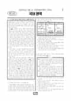

문제지

전국연합학력평가 · 시·도교육청 주관
2025년 6월 고1 학력평가 국어 1등급컷은 원점수 86점(추정), 표준점수 최고점은 150점입니다.
원점수 1등급컷은 공식 발표값이 아니라 EBSi·입시기관 값입니다. 등급별 값은 등급컷 표, 출처 구분은 데이터 원칙에 있습니다.

시험지를 먼저 풀어 보세요. 등급컷·표준점수·난이도는 흐리게 가려 뒀어요.
| 등급 | 원점수 | 표준점수 | 백분위 | 누적 |
|---|---|---|---|---|
| 1 | 86 | 136 | 96 | 4.08% |
| 2 | 76 | 127 | 88 | 11.5% |
| 3 | 65 | 116 | 76 | 24.3% |
| 4 | 54 | 105 | 59 | 40.85% |
| 5 | 42 | 93 | 40 | 60.49% |
| 6 | 31 | 83 | 23 | 77.46% |
| 7 | 23 | 75 | 10 | 89.7% |
| 8 | 16 | 68 | 3 | 96.57% |
등급별 컷 · 입시기관 4곳 원점수 추정 종합(EBSi·메가스터디·종로학원·대성마이맥) · 만점 100점
| 등급 | 표준점수 이상 | 인원(명) | 비율 |
|---|---|---|---|
| 1 | 136 | 14,188 | 4.08% |
| 2 | 127 | 25,805 | 7.42% |
| 3 | 116 | 44,527 | 12.8% |
| 4 | 105 | 57,588 | 16.55% |
| 5 | 93 | 68,330 | 19.64% |
| 6 | 83 | 59,032 | 16.97% |
| 7 | 75 | 42,586 | 12.24% |
| 8 | 68 | 23,893 | 6.87% |
| 9 | 52 | 11,994 | 3.45% |
시·도교육청 공개 자료
출처: 시·도교육청이 공개한 전국연합학력평가 성적 분석·통계자료(공개 자료 보기).
EBSi 응답자 기준으로 가장 많이 틀린 문항은 28번(3점)이고, 오답률은 74.1%입니다. 오답률 50%를 넘은 문항은 7개입니다.
| 순위 | 문항 | 배점 | 오답률 | 정답 | 많이 고른 오답 |
|---|---|---|---|---|---|
| 1 | 28번 | 3점 | 74.1% | ⑤ | ② 25.3% |
| 2 | 40번 | 2점 | 69.1% | ③ | ⑤ 23.4% |
| 3 | 24번 | 3점 | 65.8% | ⑤ | ② 22.6% |
| 4 | 21번 | 2점 | 56.9% | ③ | ④ 23.8% |
| 5 | 14번 | 2점 | 53.5% | ② | ③ 24.4% |
| 6 | 30번 | 3점 | 53.3% | ② | ③ 21.1% |
| 7 | 31번 | 2점 | 50.5% | ⑤ | ④ 28.5% |
| 8 | 41번 | 2점 | 49.1% | ④ | ② 15.7% |
| 9 | 36번 | 2점 | 48.9% | ③ | ② 17.4% |
| 10 | 42번 | 3점 | 48.4% | ③ | ④ 18.7% |
| 11 | 12번 | 2점 | 45.3% | ② | ⑤ 14.4% |
| 12 | 27번 | 2점 | 43.5% | ⑤ | ② 16.3% |
| 13 | 43번 | 2점 | 42.7% | ② | ④ 24.9% |
| 14 | 18번 | 2점 | 42.7% | ⑤ | ② 20.1% |
| 15 | 6번 | 3점 | 42.1% | ④ | ③ 28.5% |
EBSi 가채점 응답자 기준 · 전 문항 중 오답률 상위 15문항
출처: EBSi 역대 등급컷·오답률 공개 화면. 가채점에 참여한 EBSi 이용자 응답이라 전체 응시자 정답률과는 다를 수 있습니다.
발행 기관: 시·도교육청(전국연합학력평가). 파일 위치: 이 사이트가 보관한 사본. 저작권은 발행 기관에 있습니다. 원본과 다르거나 게시 중단이 필요하면 연락처로 알려 주세요. 등급컷 출처 구분은 데이터 원칙에서 설명합니다.
막대 색은 역대 대비 난이도 · 진한 막대가 이 시험 · 막대를 누르면 그 회차로 이동
| 회차 | 1등급컷 | 표점 최고 | 1등급 표점 | 난이도 |
|---|---|---|---|---|
| 6월 학평2025년 고1이 시험 | 86 | 150 | 136 | 어려움 |
| 3월 학평2025년 고1 | 84 | 153 | 135 | 쉬움 |
| 10월 학평2024년 고1 | 89 | 145 | 136 | 어려움 |
| 9월 학평2024년 고1 | 87 | 148 | 136 | 어려움 |
| 6월 학평2024년 고1 | 87 | 146 | 134 | 보통 |
| 3월 학평2024년 고1 | 91 | 141 | 131 | 매우 쉬움 |
| 9월 학평2023년 고1 | 84 | 150 | 135 | 매우 어려움 |
| 6월 학평2023년 고1 | 87 | 149 | 136 | 보통 |
| 3월 학평2023년 고1 | 95 | 136 | 131 | 매우 쉬움 |
| 11월 학평2022년 고1 | 88 | 145 | 134 | 보통 |
국어는 교육청 채점 결과 1등급 구분 표준점수가 136점, 최고점이 150점(209명)이었습니다. 3월(1등급 135점, 최고점 153점)과 비슷한 수준이었고, EBSi 가채점 응답자 기준 오답률 50%를 넘은 문항은 7개였습니다.
가장 많이 틀린 28번(3점, 74.1%)은 우월한 능력을 사회적으로 인정받으려는 계월의 모습에 주목한 <보기>로 「홍계월전」의 ㉠~㉤을 감상하는 문항이었습니다. 40번(69.1%)은 이별 상황에 대처하는 화자의 태도를 다룬 <보기>로 「청춘과부가」와 신영복 「당신이 나무를 더 사랑하는 까닭」을 감상하는 2점짜리 문항이었습니다.
21~25번은 미성년자가 법정대리인의 동의 없이 맺은 계약을 취소할 수 있는 제도를 다룬 법 지문입니다. 부모의 동의를 얻지 않은 갑(17세)과 동의서를 위조한 을(17세)을 비교하는 24번(3점, 65.8%), 계약 취소의 의미를 묻는 21번(56.9%)이 어려웠습니다.
16~20번은 시민을 법에 보장된 권리와 의무를 지닌 존재로 본 자유주의(가)와, 시민의 권리를 능동적 참여로 성취하는 정치적 결과물로 본 공화주의(나)를 엮은 지문입니다. 29~33번은 P파와 S파의 도착 시간 차인 PS시, S파가 닿지 못하는 S파 암영대를 다룬 지진파 지문으로, 세 관측소의 관측 결과를 다룬 30번(53.3%)과 31번(50.5%)이 모두 50%를 넘었습니다.
문학은 「홍계월전」(26~28번), 돼지축사였던 건물에 사는 아버지와 '나'를 그린 김재영 「코끼리」(34~37번), 「청춘과부가」와 신영복의 수필(38~42번), 고정희 「상한 영혼을 위하여」와 김승희 「장미와 가시」(43~45번)였습니다.
문법은 교체·탈락·첨가·축약의 음운 변동 사례를 다룬 14번(53.5%)이 까다로웠습니다. 화법·작문은 여름철 자외선이 피부에 미치는 영향을 다룬 발표(1~3번), 자주 먹는 식품을 다룬 교지 기획 기사 회의(4~7번), 청소년 미디어 리터러시 교육의 중요성을 주장하는 신문 독자란 글(8~10번)이었습니다.